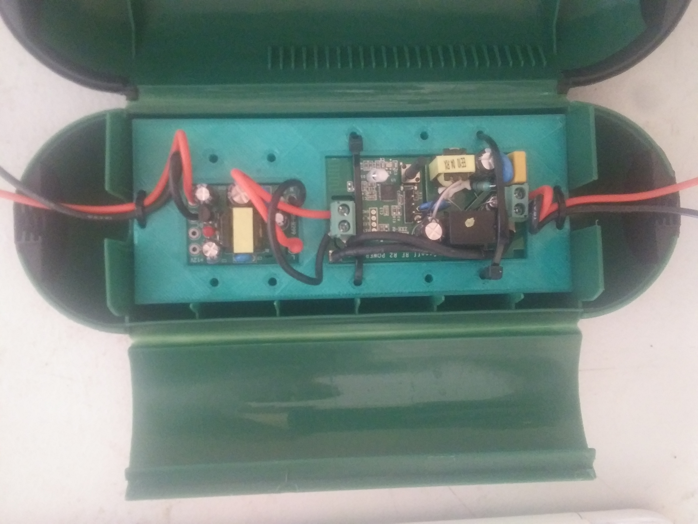

16 Apr 2021

The problem that we are facing is regularly irrigating roughly 40 - 100 acres with as little water, labor, and power possible. Currently, we have about 20 overhead sprinkler valves and 50 drip irrigation valves. It’s a roughly 5 - 15 minute round trip to change each sprinkler valve, which both takes time and interrupt other projects you may be working on. This translates to roughly four labor hours to irrigate 40 acres, and will take even more time when the rest of the property needs to be irrigated. The 50 drip irrigation valves are less of an issue right now because the valves are in a more central location.
Secondary to the issue of manual labor is minimizing energy costs and water usage. In 2020, the energy cost was roughly $12,000 to irrigate 40 acres. We’re also limited by our water supply, a common problem for farmers in California. When we are near the end of the irrigation season (September - November), the creek produces much less water and at times, the pumps dry up the creek. Currently we only irrigate 40 acres, which is about 40% of what we plan to irrigate. As we irrigate more land, it’ll be important to use water resources more efficiently and save on energy costs when possible.
First stage: Implement remote on / off functionality for each valve
Second stage: Build a scheduler, schedule optimizer, and schedule deployer
Third stage: Add valve and field sensors to collect and visualize water pressure, water flow, and dampness data
Fourth stage: Incorporate sensor data to further reduce water and energy consumption
Succinctly, the infrastructure is a mix of overhead sprinklers and drip irrigation. The sprinklers each have their own 2” valve, and are about 80 meters from each other. We currently have 16 sprinklers. We also have about 30 rows with drip irrigation, each with their own valve. Because the water is delivered to the field through a pump, there is a small acceptable water pressure range. As a rule of thumb, one sprinkler valve and 5-15 drip irrigation valves must be open when the pump is on, otherwise, the pipes will burst under high pressure, and the sprinklers won’t turn with low pressure. Other infrastructure that we’ll have access to is 120 VAC power at the edge of the field, and WiFi coverage throughout.
This problem naturally calls for a system to remotely command the valve state and receive sensor data. It’s clear we need electrically controlled valves, small and cheap computers in the field (microcontroller or Raspberry Pi), a way to both communicate with and power the devices in the field, and a user interface to command and interpret the sensor data. On the software side, the end goal is to use water, pressure, and flow data to intelligently irrigate the field. The pump should run for the least time possible, correlating to energy and water savings.
Ball valves only require power when switching state, while solenoid valves require continuous power in the ‘on’ state. But ball valves, depending on type, require either polarity reversal, or a feedback sensor to read position. Solenoid valves can be toggled with a SPSP relay. Ball valves introduce more hardware complexity, so when thinking about scaling this to 100 - 1000 valves in the field, it’s something I wanted to avoid.
At first I tested an aftermarket 120 VAC solenoid on a valve that came with a 24 VAC solenoid. It worked but was loud, got hot, and drew more power. I eventually found a 24 VDC solenoid that could be actuated by 5 VDC. This was better in every way, but if I used 120 VAC to power the valves would mean I’d have to add another piece of hardware to covert from 120 VAC to 5 VDC.
I still debate the best way to solve the power issue. The main sources of power considered are cabled 120 VAC and a minimal solar / lithium battery system. 120 VAC is reliable, cheap, and requires little design, but then you have cables running all throughout the field on top of the 2” PVC where they’ll have to move periodically and will probably break from loose connections or get damaged by farm equipment. As the farm gets built out further from the 120 VAC power source, this won’t be a realistic option. The solar setup is more complex and could possibly fail if the solar panel and/or batteries aren’t sized big enough, and introduces other possible hardware failures.
Before finding the Sonoff product line (below), I was discouraged from the naive assumption that I’d have to power the microcontrollers or Raspberry Pis by setting up a lot of outlets in the field, which would’ve been a messy and bloated solution. Luckily, I found the Sonoff Basic microcontroller board which takes 120 VAC directly from the cable.
I found another product, the Sonoff SV, that has a build in relay and takes 5 - 24 VDC. After reluctantly deciding to use the Sonoff Basic where we had access to 120 VAC, I wanted to understand power requirements to power the Sonoff SV board 24/7 and power the solenoid for 1 hour / day. Powering the microcontroller at 5 VDC draws about 70 mA and 150 mA when the relay is triggered. The 24 VDC solenoid powered by 5V draws about 100 mA. So 70 mA for 23 hours / day, and 250 mA for one hour / day. We’d like to run sprinklers at night (to minimize evaporation loss), so conservatively, we’d need
(11 hrs * 70 mA) + (1 hr * 250 mA) = 1.02 Ah
Conservatively, we’d need 3 3.7 VDC 500mAh lithium batteries. I still haven’t tested if the 3.7 - 4.2 VDC range is enough to power the Sonoff SV and solenoid, but if not, I may be able to put them in series, but that may complicate the solar panel / minimal solar controller setup. The Sonoff SV is run on an ESP8266, which I know has a low power mode, but I’m still in exploratory phase and haven’t gone down that route, yet. A potential downside to low power mode is that I may loose communications with it because I think it’ll turn off the WiFi.
I’m also exploring using super capacitors instead of batteries. This has the benefit of possibly reducing complexity and cost, and they’ll last forever. The downside is that I haven’t seen any projects that do this, so there are a lot of unknown unknowns. I’ve order these 10,000 F 2.7v super capacitors. I’ll experiment putting them in combinations of series and parallel, and I should be able to get around 1-2 Ah in an acceptable voltage range, recharged directly by a 5 W solar panel.
We don’t have cell service on the property, so we’re gradually building out WiFi service to the whole 130 acres. Both the Raspberry Pi and ESP8266 on the Sonoff series boards come with a WiFi antenna, so I readily decided to use it for communications. We also entertained the idea of using LoRa and power-line communication. LoRa is a great solution for farms, but because we plan to have full-service WiFi, it didn’t make sense to manage two wireless communication systems. I’d never heard of power-line communications before, so while interesting, there may not be off-the-shelf solutions, and it relied on cabled power.
At first I tested using a Raspberry Pi with a relay board that held 16 relays. So I’d be able to control 16 solenoids or 4 - 8 ball valves, depending on relay type and ball valve motor wiring. If I went with 120 VAC and outlets, this would limit the number of outlets I needed, and it’s nice to be able to ssh into the pi to make changes or debug.
This still seems like a non-optimal solution, and I gradually tested different microcontroller solutions until I found the Sonoff series. This uses an ESP8266 with a built-in WiFi antenna and SPST relay rated for 120 VAC for the Sonoff Basic and 5 - 24 VDC for the Sonoff SV. Other boards used poorly documented chips which made it difficult to flash custom firmware. The major downside is that it doesn’t have GPIO pins, but I’ve read that you can commandeer the TX and RX pins to use as GPIO. I’ll have to learn more about then when we implement sensors, but I wish I had time to test it before committing to this board.
The firmware is fairly basic and most of it is just gluing parts of this guide together. It includes
I implemented a different OTA procedure which uses HTTP GET requests to check if there’s a firmware update on the server. Then uses the ESPhttpUpdate library to update the firmware. To update, I update the FW_VERSION in the code with the latest version, upload the new compiled code to a specific file on the server, then update the file ‘postedVersion.version’ to contain the latest version number.
Global:
HTTPClient httpClient;
const int FW_VERSION = 2;
Main loop:
// get version
Serial.println("checking for version update");
httpClient.begin("http://192.168.1.7/postedVersion.version");
int httpCode = httpClient.GET();
if( httpCode == 200 ) {
Serial.println("200");
String newFWVersion = httpClient.getString();
Serial.print("version on server: ");
Serial.print(newFWVersion);
int newVersion = newFWVersion.toInt();
if( newVersion > FW_VERSION ) {
Serial.println( "Preparing to update" );
// get binary
t_httpUpdate_return ret = ESPhttpUpdate.update("192.168.1.7",
80,"/postedVersion.bin");
switch(ret) {
case HTTP_UPDATE_FAILED:
break;
case HTTP_UPDATE_NO_UPDATES:
Serial.println("HTTP_UPDATE_NO_UPDATES");
break;
My favorite feature of the firmware is that all devices can have the same code. They each have a lookup table that consists of all the name : value pairs with their MAC address and human readable name. This design choice is especially valuable because it allows for a simpler communication protocol, and allows all client devices to have the same code. The database stores IoT device info with a compressed human-readable name, and the IoT clients have a dictionary of all MAC addresses matched to human-readable name. When a command is received by a device, the device will look up it’s human-readable name, and then act accordingly. This simplifies the firmware updating process because the same code can be pushed to all devices.
Global:
char* ID;
String MAC;
struct entry {
String MAC;
char* ID;
};
entry entries[] = {
{ "C8:2B:96:4F:DC:A6", "p00d00" },
{ "D8:F1:5B:DA:E9:27", "p00d01" },
{ "D8:F1:5B:E8:3B:51", "p00d02" }
};
Setup:
// set MAC
MAC = WiFi.macAddress();
// set ID
for (int i = 0; i <= sizeof(entries); i++) {
if (entries[i].MAC == MAC) {
ID = entries[i].ID;
}
}
Serial.println(ID);
Main loop MQTT callback function:
// 'doc' is the deserialized JSON message from the MQTT connection
const String command = doc[ID];
Here I host a web app built with Flask, run a Redis instance, an MQTT instance and server, and a ZMQ server (for a separate part of the project). For direct on/off functionality, the app takes user input as an HTTP POST, the Flask server handles the request and updates the Redis database. An MQTT server then grabs the Redis value and publishes it, which is then pushed to subscribing clients. This is admittedly an overly complicated stack. I already use Redis and ZMQ for other projects, but had a hard time with ZMQ on the microcontrollers, so I had to add MQTT to the stack.
I’d already started managing a continuously operational server on a Raspberry Pi for a separate project because it had a few daily users. Most reliability issues were solved by running a cron job on boot that started a tmux session and started the necessary programs. Starting the programs in a tmux session allows me to work on the server without interfering with the necessary programs. Here is the bulk of the startup server script:
#bash
......
sleep 2
ps aux | grep redis | awk '{print $2}' |
head -n 1 | xargs sudo kill -9
runuser -l pi -c 'redis-server &'
sleep 2
# point port 80 to port 5000
sudo iptables -t nat -A PREROUTING
-p tcp --dport 80 -j REDIRECT --to-port 5000
python3 /home/pi/twistedApp/twistedApp.py &
python3 /home/pi/zmqServer.py &
sudo python3
/home/pi/twistedApp/
app/tools/network/pingLAN.py &
ps aux | grep mosquitto | awk '{print $2}' |
head -n 1 | xargs sudo kill -9
mosquitto &
sleep 2
python3 mqttServer.py &
python3 OTAserver.py &
This has been a journey of trial and error to get all the programs to restart and make re-connections with clients reliably. I kill the Redis and MQTT / mosquito daemons before restarting them. I also reroute port 80 traffic to port 5000, which allows me to run the web app ‘twistedApp’ from a non-root user, and still allow users to access the web page at the simple local domain ‘twisted.local’ instead of the unintuitive ‘192.168.1.7:5000’
Currently, the functionality available to users is direct on/off valve and pump control using forms on a web app.
The IoT device at the pump is a Raspberry Pi with a high-voltage solid state relay and a float sensor. The pump runs, but will momentarily stop if the creek water level gets too low. If the creek water level rises, the pump will turn back on. This functionality is handled locally on the Pi at the creek.
I’ve started to build out a scheduler which will create an optimized schedule that limits the total pump runtime while staying within the acceptable water pressure range. The user inputs how long they would like to run each drip irrigation row and each sprinkler.
When the form is submitted, the values are passed to an optimizing function. Here it creates a list of all acceptable valve state permutations. For example if we had 2 drip valves and 2 sprinklers, and we required 1 sprinkler and 1 drip valve to be open to stay in the acceptable pressure range, the acceptable states would look as follows:
| Valve Type | State 1 | State 2 | State 3 | State 4 |
|---|---|---|---|---|
| Drip 1 | On | On | Off | Off |
| Drip 2 | Off | Off | On | On |
| Sprinkler 1 | On | Off | On | Off |
| Sprinkler 2 | Off | On | Off | On |
The state will represent a time increment of 15 minutes. We’ll then create increasingly longer list of state combinations, and stop when we’ve reached a schedule that opens the valves for the correct amount of total time for each valve. This ensures all valves are open for the inputted time, while minimizing the time the pump is on. Because it’s beneficial to water the plants periodically throughout the day, the final schedule will be one that alternates valve state permutations.
I’ll still have to build a deployer that allows you to select a schedule and deploy it at a specified time.
As I’m finishing building this out and installing / testing in the field, I found that the Sonoff devices come with a cloud-based, off-the-shelf controller called eWeLink, which covers most of our initial use cases (scheduling and on/off functionality). They also have event-triggered control, but it looks like they only support sensors within the Sonoff ecosystem, which, unless they expanded their product line or made the software open source, wouldn’t be able to fulfill our requirements.
If I would’ve known about this off-the-shelf software solution earlier, I could’ve prioritized finishing the hardware design and installation, and therefore completing Stage 1 and 2 earlier.
When I found the Sonoff boards with built-in SPST relay, I was relieved from a lot of hardware mess. The downfall is that it limits me to solenoid valves. In the future, I may try 3-wire ball valves with a normal ESP8266 and SPDT to limit power consumption and possibly minimize solar / battery requirements.
If this ever moves from a home brew project to a consumer-grade product / service, I would build a more robust server that could handle multiple customers, and I’d likely host in in the cloud with native iOS and Android apps.
The ideal hardware setup would be an SPDT relay on built-in Sonoff SV controlling a 3-wire ball valve, powered by a 5-10 watt solar panel and 3-4 lithium batteries or an appropriately-sized supercapacitor. The ideal software architeture would be native phone apps and a web app, with a data dashboard to view sensor data.